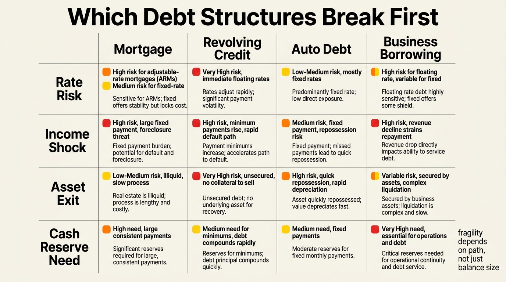

The Debt Illusion Cycle
Debt often feels like wealth because it purchases the visible effect of wealth immediately. It buys the house, the car, the renovation, the business equipment, the degree, or the lifestyle upgrade before the underlying balance sheet has actually earned the resilience to carry it. The illusion is not that debt has no value. The illusion is mistaking borrowed capacity for durable surplus.
That distinction is easy to ignore during expansion. Income is still flowing, asset prices are still rising, and monthly payments still look manageable. The balance sheet can even appear stronger because the purchased asset has market value. The problem appears later, when fixed claims remain fixed but mobility, liquidity, and pricing power all weaken at the same time.
Established fact: leverage can accelerate asset acquisition and smooth large purchases, but it also creates fixed obligations, refinancing dependence, and sensitivity to income shocks or asset repricing. Reasoned inference: households usually get into trouble not from debt alone, but from reading borrowed purchasing power as if it were the same thing as earned resilience.

Why Debt Feels Like Wealth
The first reason is timing. Borrowing moves consumption or acquisition into the present while the cost is distributed over years. The second is optics. A financed asset appears on the balance sheet immediately, while the drag from interest, maintenance, tax, insurance, and reduced future flexibility is harder to feel upfront. The third is social comparison. Households compare visible outcomes more easily than liability structure.
This is why debt belongs in the same frame as The Asset-Rich, Cash-Poor Paradox and The Liquidity Illusion. A household can look wealthier after borrowing because the asset side expanded. It is not necessarily more resilient. Resilience depends on how much freedom remains after the fixed claim is serviced.
The Cycle Usually Has Four Stages
Stage one is access. Credit is offered on terms that feel reasonable relative to current income and current asset pricing. Stage two is normalization. The household adjusts to the new payment stack and begins treating it as part of ordinary life. Stage three is reinforcement. Rising asset values or stable employment make the borrowing decision feel validated. Stage four is compression. A rate reset, job transition, repair cost, vacancy period, or market drawdown reveals that the household was operating with less slack than it assumed.
The important point is that this cycle can occur in mortgages, private credit, credit cards, business borrowing, student debt, and auto finance. The specific asset differs. The structural error is the same: borrowed reach gets mistaken for baseline capacity.
Productive Debt And Self-Deceptive Debt Are Not The Same
Debt is not automatically bad. Productive debt funds assets or capabilities that generate cash flow, improve durable earning power, or replace a worse liability structure. Self-deceptive debt funds consumption that the household wants to experience as permanent before the household has actually built a permanent margin.
The dividing line is not moral. It is structural. A loan can be rational even at a high headline rate if it produces higher-quality optionality than the cash alternative. A low-rate loan can be destructive if it traps the household in a rigid cost stack, a weak asset, or a lifestyle that only works under one favorable scenario.
| Debt type | Can be productive when | Turns deceptive when |
|---|---|---|
| Mortgage debt | Housing cost, tenure, and financing fit the household's mobility and cash-flow reality | The payment stack blocks relocation, savings, or maintenance capacity |
| Business debt | Cash generation and downside control are visible and governable | Revenue volatility is ignored and debt is treated like free growth capital |
| Education debt | Skill durability and earnings lift are real relative to the obligation | The degree carries weak labor pricing power or long payoff lag |
| Consumer revolving debt | Rarely, as a short bridge with a fast and credible payoff path | It becomes recurring lifestyle support and compounds at high effective cost |
Fixed Costs Are The Real Weapon
People often focus on interest rate because it is visible and comparable. The deeper issue is the fixed claim. Once a payment becomes mandatory, it competes with savings, retraining, medical buffers, portfolio rebalancing, and the ability to survive a bad timing event. That is why debt structure can damage households even before default enters the picture.
A household with moderate leverage and high slack can be safer than a household with lower nominal leverage and no slack. This is why WealthMeter keeps returning to runway, optionality, and liquid reserves. The key variable is not whether the household can pay today. It is whether the household can keep paying after one or two conditions change at the same time.

Why Asset Appreciation Often Hides The Problem
Appreciation can turn a leveraged decision into a temporarily flattering one. Home equity rises. Business equity marks higher. A financed portfolio shows gains. The household then reads appreciation as proof that the leverage was safe rather than as evidence that favorable market direction arrived before the balance-sheet stress test did.
This is the same mistake behind The Cost-of-Capital Trap and The Mortgage Lock-In Trap. Households often optimize for the front-end affordability of the deal rather than for the total path dependency the deal creates. When mobility, refinancing, or liquidity later becomes valuable, the earlier gain looks less impressive.
How To Read Debt More Honestly
The right frame is not debt-to-income alone. It is debt service relative to real free cash flow, liquidity relative to the payment stack, and asset quality relative to the liability that funds it. Ask what happens if income falls, if an exit takes longer than expected, if rates change, or if the asset cannot be sold quickly without a haircut.
- Separate purchased assets from the fixed obligations required to keep them.
- Model debt against stressed cash flow, not only current cash flow.
- Treat optionality loss as a real cost even when default risk looks low.
- Do not count appreciation as proof that the liability structure was sound.
Known, Inferred, And Unknown
| Category | Assessment |
|---|---|
| Known | Debt increases current purchasing power while creating fixed future claims that reduce flexibility under stress. |
| Known | Rate resets, income shocks, and asset illiquidity can turn manageable leverage into a balance-sheet problem quickly. |
| Known | Not all debt is equally fragile. The structure, collateral quality, and cash-flow context matter more than one headline ratio. |
| Inferred | Many middle-class and upper-middle-class wealth stories are weaker than they appear because debt-financed lifestyle expansion gets mistaken for earned resilience. |
| Unknown | How household borrowing behavior will adapt if higher refinancing costs, slower asset appreciation, and weaker job security persist together for multiple years. |
Source Frame
This analysis draws on stable balance-sheet logic rather than one specific market headline: household leverage dynamics, debt-service burden, refinancing risk, asset-liability mismatch, and the repeated empirical pattern in which cash-flow stress emerges before nominal net worth fully reflects it.
The main open question is not whether debt can be useful. It is whether households can distinguish productive leverage from self-deceptive leverage before market conditions or income conditions force the answer.